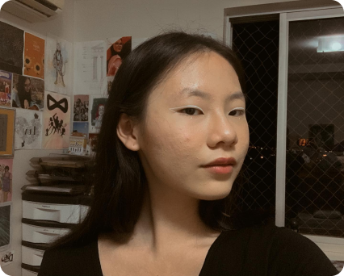

Sou estudante na área de informática há 2 anos e possuo grande interesse em Design. Já trabalhei com Python, HTML e CSS e possuo experiência em softwares como Canva, Gimp e Figma. Gosto de aprender coisas novas e de desafios.
Meu nome é Denise Tiemi Miura e sou estudante do último ano no Instituto Federal do Paraná - Campus Cascavel e estou cursando Técnico em Informática. Possuo conhecimento iniciante em Python, HTML e CSS. Além disso, já participei em olimpíadas como IphCo e Obmep e em eventos na área da robótica. Tenho grande interesse na área de Design e Ilustração e pretendo me especializar no futuro. Possuo experiência em softwares como Canva, Gimp e Figma. Sou muito criativa e adoro aprender coisas novas em diversas áreas.